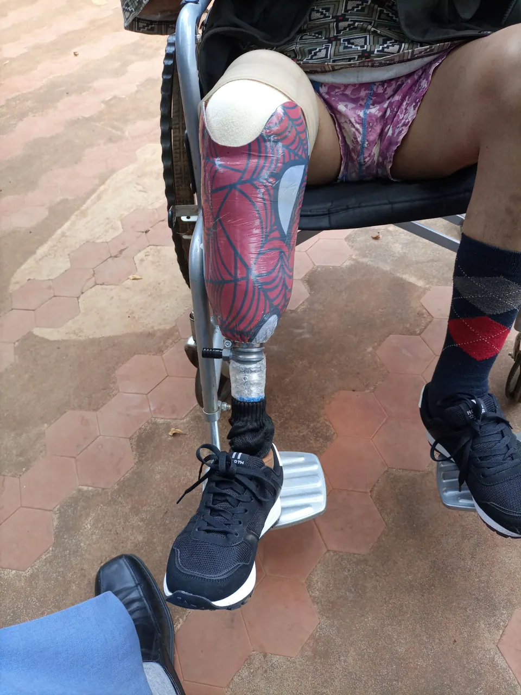
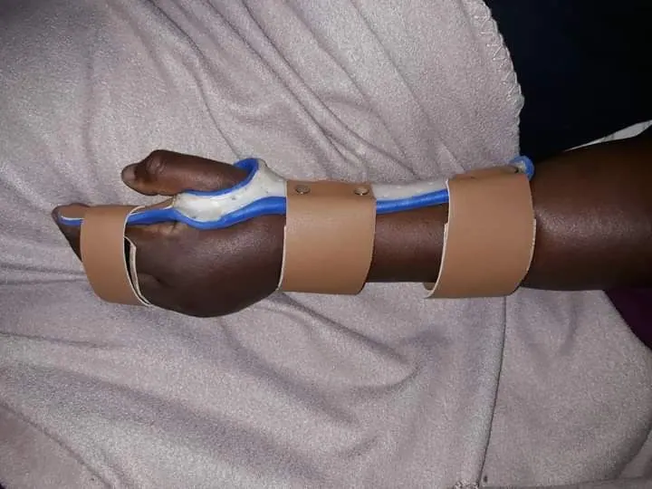
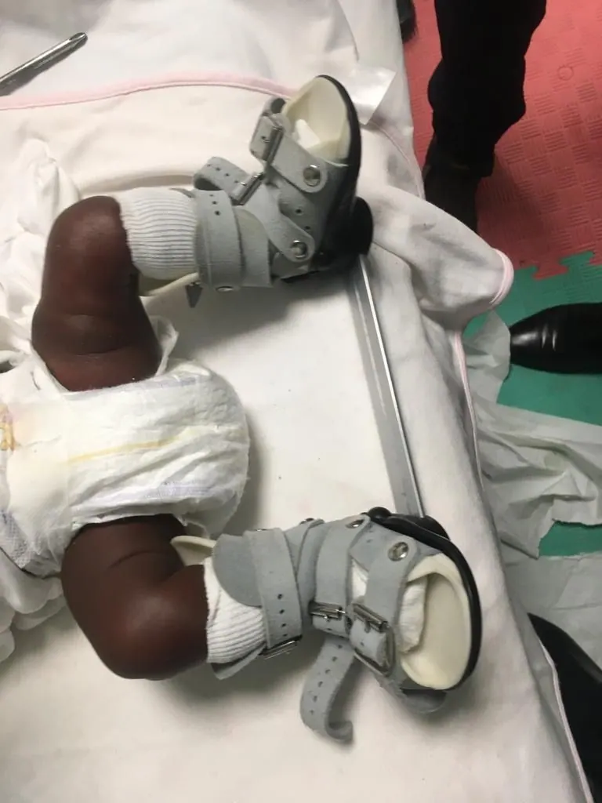

Our services
Always ready to provide the best services
Customised, high-quality and affordable orthopaedic care in Nairobi, from your first assessment to follow-up support.

Prosthetics
We are committed to restoring mobility and improving lives with customised, high-quality and affordable prosthetic solutions. Our team combines carbon fibre lamination and advanced 3D technology to create lightweight, durable and comfortable prosthetics tailored to each person's needs.
Whether you need a solution for daily activities, sports or specialised support, we provide precision-fit prosthetics for maximum comfort and natural movement.

Orthotics
We design custom orthotic solutions to enhance mobility, relieve discomfort and improve posture. Our advanced technology provides stability and better function for a range of conditions.
We make precision-fit orthotics for the foot, knee, back and upper limbs, and we personalise adjustments so you can move confidently in daily life.

Other services
We deliver comprehensive orthopaedic care with compassion and expertise, with personalised support to help restore mobility, ease discomfort and enhance your quality of life.
This includes diabetes footcare, clubfoot management, orthopaedic footwear, traction aids, crutches and wheelchairs.
Are you, or a loved one, looking for prosthetic or orthotic care?
We exist to provide the best care for you.